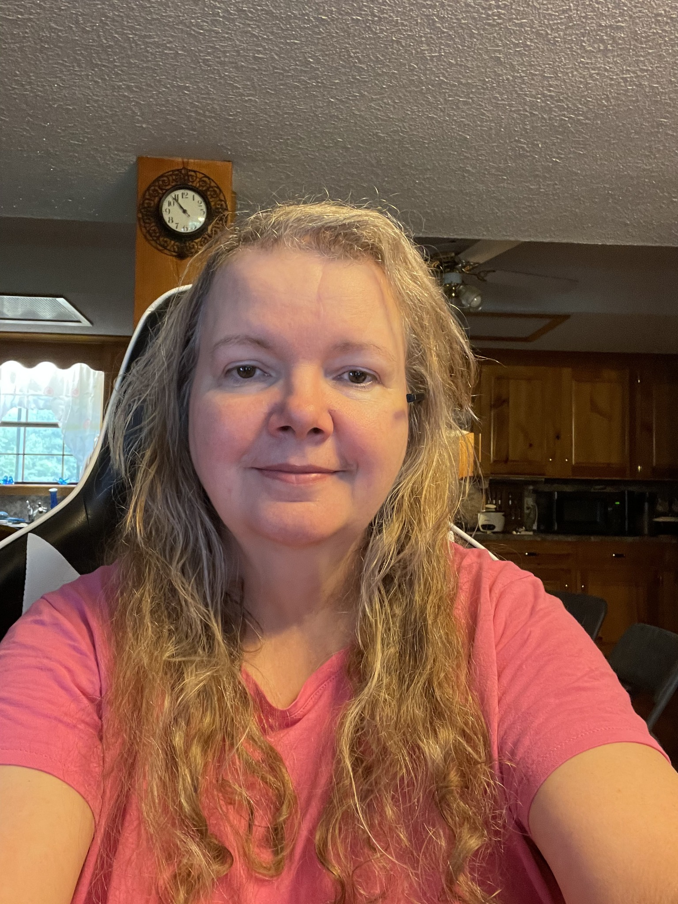
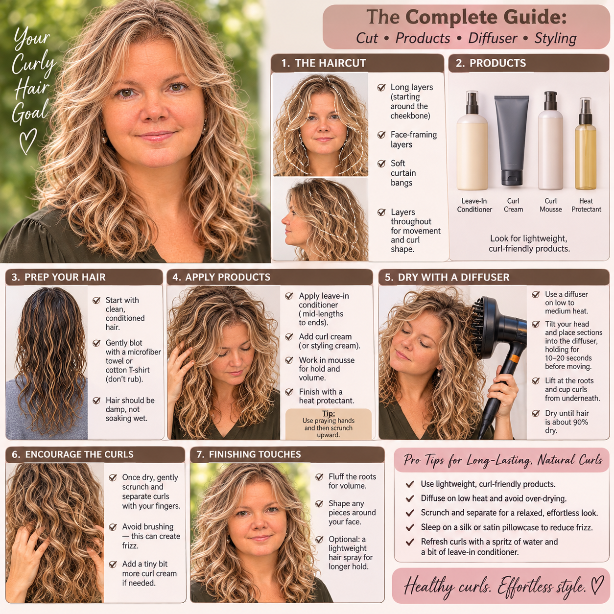
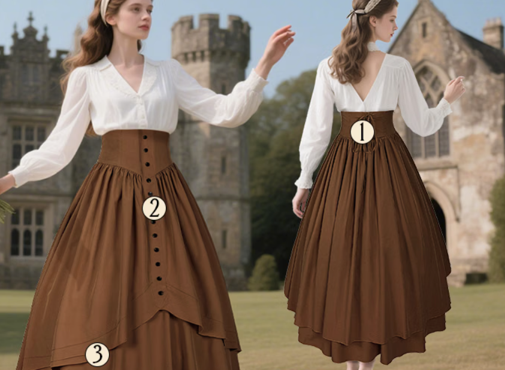

💇♀️
Hair
Light-weight rinse-out conditioner and volume-first styling are the goal. The point is to create lift, softness, and movement without flattening the roots or creating a heavy, weighed-down look.
Key styling techniques
Start with hair that is thoroughly wet, use a volumizing mousse or light gel, then rake and scrunch upward from the ends to the roots. Micro-plop instead of using a towel, hover-diffuse upside down, and clip roots for lift while drying.
- Soak wet hair before styling gel is applied.
- Choose a volumizing mousse, foam, or light-to-medium hold gel rather than heavy curl creams or butters.
- Rake, glaze, and scrunch. Work in a leave-in conditioner or mousse, smooth a light gel over the outside of the wave clumps, and pulse-scrunch upward from the ends to the roots.
- Micro-plop instead of using a bath towel. Regular terrycloth towels create frizz. Gently scrunch excess water out using a microfiber towel or soft cotton T-shirt.
- Flip your part to the opposite side you want to wear it. Once fully dry, flip it back for instant root lift.
- Hover-diffuse upside down on low speed so the roots dry first and stay lifted.
- Cup-diffuse the lengths once the roots are mostly dry to build shape and volume.
- Use claw clips at the crown while air-drying if you want extra fullness.
- Scrunch out the crunch once completely dry to soften the cast without losing body.
- Fluff at the roots with fingertips to lift the crown and create extra fullness.
- Protect overnight with a satin scrunchie or silk pillowcase to prevent crushing.
- Refresh on days 2–4 by misting with water and scrunching upward.

AI style ideas
Explore the full reference set and look at how volume, layer shape, and face framing change the silhouette.
Style direction
The goal is soft movement, lifted roots, and a healthier-looking bounce rather than a heavy, weighed-down wave pattern.

👗
Clothes
When I am thinner, I want to indulge the historical fantasy of white lace and structure — but the functional side matters more. After losing weight, loose skin will be a factor, so clothing should support, smooth, and prevent irritation without feeling constrictive.
Core needs
- Choose cotton or cotton blends so the skin can breathe and sweat can evaporate instead of collecting against the body.
- Use a little stretch or spandex for compression without requiring heavy lacing or hooks.
- Beware of chafing, especially on loose skin areas that can become irritated.
- Lean toward high-coverage, longline, or overbust silhouettes to smooth and support the torso.
- Use flat, smooth seams and flexible boning to avoid digging or discomfort.
- Favor adjustable lacing or multiple rows for shape and comfort.
Functional garment terms
- Corset: Underclothes with structure to compress and shape the torso.
- Bodice: A fitted outer garment popular in Victorian and Renaissance styling that supports the chest and waist.
- Stay: The 18th-century predecessor to the corset, with a V-shaped front that smooths the abdomen and supports the torso.
- Longline Bustier: A longer bra style that reaches to the waist, pairing delicate lace with light boning and soft support.
Outer garment style terms
V-waistband / Swiss waist effect: a pointed or V-shaped front creates a historical silhouette and visually elongates the torso, helping the waistline look more defined without requiring harsh compression.
